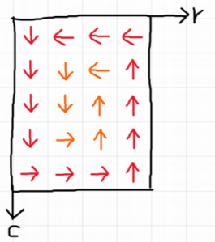

백준에 하이퍼~ 라는 이름의 특이한 문제들이 있다. 모두 구데기컵 대회에 나온 문제들인데, 특징은 데이터가 11차원 이라서 11차원 배열을 써야 한다는 점이다. 듣기만 해도 끔찍해 보이는데, 천천히 생각을 하면 생각보단 쉽게 풀 수 있다.
데이터 입력과 처리
3차원 데이터 입력받는것도 힘든데, 11차원의 데이터를 받아야 하니 벌써부터 막막하다. 11중 for문과 11개의 []로 처리는 가능하나, 좀 더 깔끔하게 풀기 위해서 재귀 함수와 template을 이용했다.
|
|
중첩 for문을 하나씩 함수에 넣어뒀다고 생각하면 된다. 맨 처음에 init 함수를 호출하면 T가 vector가 11개인 init이 호출된다. 이제 안에서 d[i]인 값으로 init 함수를 호출하면 맨 바깥에 있는 vector가 벗겨진 10개의 vector 타입으로 호출된다. 이것이 계속 반복되면 vector들이 다 사라지고 안에 있는 ll(long long) 타입만 남게 된다. 그러면 Explicit template specialization에 의해 아래에 있는 함수가 호출되고, 이때 입력을 받거나 연산을 처리하면 된다.
위 코드는 배열을 초기화하고 입력을 받는 코드이고, 다른 연산은 밑에서 보거나 소스코드를 참조하자.
BOJ 17114 - 하이퍼 토마토
11차원 배열에 안 익은 토마토와 익은 토마토가 있는데, 익은 토마토는 주변의 안 익은 토마토를 1일 후 익은 토마토로 바꾼다. 이떄 모든 토마토가 익은 토마토가 되는 시간을 출력하면 된다.
이런 4차원 이상의 배열은 머리로 떠올릴 수 없기 때문에, 떠올릴 수 있는 2/3차원으로 줄여서 생각해보자. 문제를 2차원으로 낮춰서 생각해보면 처음에 익은 토마토들을 queue에 넣고, queue에서 뽑으면서 인접한 안 익은 토마토를을 익게 하고 queue에 넣는, 전형적인 BFS로 풀 수 있다.
이것을 똑같이 11차원에서 하면 된다. 다만 2차원에서는 인접한 구간이 상하좌우 4개라면, 11차원에서는 11개의 축 * 2 = 22개라는 점이다. 배열의 index를 vector로 저장하고, 인접한 곳에 접근할 때는 for를 돌려서 i번째 index를 +1, -1 하면 된다.
|
|
배열 접근은 index를 담은 vector를 가지고 매 차원마다 해당하는 index에 접근하면 된다.
참고로 이 문제는 밑에 두 문제와는 입력 방법이 조금 다른데, 이 문제는 첫 번째 축부터 입력은 받고 밑에 두 문제는 마지막 축부터 입력을 받는다. 본인은 뒤에서부터 문제를 풀어서 그냥 축들을 전부 뒤집고 입력을 받았다. (어차피 배열을 출력할 필요가 없으니까)
BOJ 18830 - 하이퍼 수열과 하이퍼 쿼리
수열인데 배열이라 생각해도 된다. 문제가 조금 난해한데, 자세히 보면 그냥 쿼리마다 부분배열의 합을 구하는 문제이다.
역시 2차원으로 낮춰서 생각해보자.
2차원에서 부분배열의 합을 구하는 방법은 prefix sum 이용해 (0, 0) ~ (x2, y2) 구간에서 ┌자 영역을 빼면 된다는 것이 잘 알려져 있다. 이것을 각 축마다 A영역, B영역으로 나눠서 본다면 ┌자 영역이 \( A + B - A \cap B \) 인 포함-배제의 꼴이라는 것을 관찰할 수 있다. 3차원에서도 생각해보면 포함-배제의 꼴로 성립한다. 그러므로 이를 11차원으로 확장해도 똑같다고 생각할 수 있다.
|
|
각 축을 돌면서 해당 축을 포함 안 시키는 경우는 0 ~ a2[dim], 포함 시키는 경우는 0 ~ a1[dim]-1 영역이 된다. 포함되는 개수가 홀수면 +, 짝수면 -인데, 어차피 구한 ┌영역의 값을 전체 영역에서 빼는 것이므로 부호를 반대로 뒤집었다.
BOJ 21298 - 하이퍼 배열 돌리기
안그래도 괴랄한데, 쿼리 종류만 121가지가 있어서 더 괴랄하다. 하지만 잘 보면 쿼리의 종류는 3가지만 있다는 것을 알 수 있다.
- 1~11 쿼리 - 부분 배열을 한 개의 축을 제외한 초공간에 대칭
- 12~66 쿼리 - 부분 배열을 두 축의 평면을 기준으로 반시계방향으로 한 번 회전
- 67~121 쿼리 - 두 축 a, b를 고르고, 전체 배열을 a = b에 대해 대칭
입력 조건에 첫 번째와 두 번째 쿼리는 최대 1,111개만 등장한다는데, 세 번째 쿼리는 그런 말이 없다(총 쿼리 수 111,111). 이 말은 첫 번째와 두 번째 쿼리는 배열 전체를 순회해도 되는데, 세 번째 쿼리는 그럴 수 없다는 것을 의미한다. 일단은 세 번째 쿼리부터 보자.
3. 67~121 쿼리
방정식이 나오는데, 일단 2차원으로 낮춰서 생각해보자.

점 (a, b)가 직선 y=x에 대칭되는 점은 (b, a) 인것은 쉽게 알 수 있다. 즉, 두 개의 축에 대응되는 값이 서로 바뀐다는 말이다. 그리고 3차원으로 확장해 생각해 보면 나머지 축들은 변화가 없음을 알 수 있다.
그러면 배열 전체를 순회하면서 대응되는 값만 바꿔주면 될 것 같지만, 위에서 말했듯이 그럴 순 없다. 대신에 축 자체를 바꿔버리는 방법이 있다. 즉, x축을 y축으로, y축을 x축으로 바꾸는 것이다. 그리고 나중에 연산에 x축이 필요할 때는 y축을 쓰고, y축이 필요할 때는 x축을 쓰는 방식이다.
이것을 구현하기 위해 변환 테이블을 만들자. 현재 축 → 배열의 축 으로 바꾸는 cvtDim[]과 배열의 축 → 현재 축 으로 바꾸는 invCvt[]배열을 만든다. 만약 축이 바뀌면 해당 현재 축에 대응되는 배열의 축이 바뀌는 것이므로 cvtDim[a]와 cvtDim[b]를 바꾸고, 바뀐 것에 맞게 invCvt[]도 수정해주면 된다.
1. 1~11 쿼리
배열을 초공간에 대칭한다는 말이 무슨 의미인지 모르겠다. 다행히 예제 1번이 그림으로 설명이 되어 있으므로 이것을 참고해보자.

1번 쿼리이기 때문에 m축을 제외한 초공간에 대칭이고, 범위는 \( 1 \le m \le 3, 2 \le w \le 4 \) 다. 나머지 축들은 크기가 1이기 때문에 무시하고, m축과 w축을 평면에 수직으로 배치하면 그림처럼 2차원 배열로 표현된다. 점선 영역이 쿼리에 대응되는 영역인데, 연산 결과 m축 index만 뒤집히는 것을 볼 수가 있다. 이것을 보고,
다른 축들의 index는 변하지 않고, 제외된 축의 index만 뒤집히는 것이 아닐까?
라고 유추할 수 있다. 3차원에서 생각을 해보면, xy평면에 대칭을 하면 x랑 y값은 바뀌지 않고 z값만 뒤집히게 되므로 위 추측은 유효하다고 생각할 수 있다. (증명은 못하겠지만, 맞았으니까 맞지 않을까?)
|
|
뒤집는 것은 범위의 양쪽 끝부터 서로 바꿔주면 된다. 뒤집는 축(swapDim)이면 처음에 정한 2개의 index에 접근하고, 아니면 해당 영역을 전부 순회하면 된다. 주의할 점은 순회할 때 축(dim)은 배열의 축이므로 배열의 축 → 현재 축으로 변환하고, 이 축을 기준으로 데이터를 가져오거나 연산을 해야 한다 (데이터가 현재 축 기준이니까).
2. 12~66 쿼리
두 축의 평면을 기준으로 반시계방향으로 회전하는 것이기 때문에, 두 축을 제외한 다른 축들은 바뀌지 않는다는 것을 생각할 수 있다. (잘 모르겠다면 3차원에서 배열이 xy평면에 회전한다고 생각해보자. x, y값만 바뀌고 z값은 바뀌지 않는다.)

반시계 방향으로 회전하는 것은 위 그림처럼 생각하면 된다. 먼저 맨 바깥쪽 경계를 회전시키고, 그다음 안쪽으로 들어가면서 회전시키면 된다.
|
|
인접한 원소끼리 swap을 해도 되지만, 그냥 새로운 배열에 복사했다. swap 함수와 비슷한 느낌으로 작성하면 된다. 두 개의 축에서만 이동하기 때문에 이동할 축(rdim, ddim)과 이동할 위치(r, d), 얼마만큼 이동할지(dr, dd)를 정하고 해당 축인 경우 이동시키면 된다.
|
|
위에서 작성한 mv함수를 이용해 tmp배열에 이동한 값을 넣어준다. 영역의 바깥쪽 테두리를 회전시키고, 영역의 양쪽 끝을 한 칸씩 줄여 다음 테두리를 회전시키는 방식을 쓰면 된다.
출력하기
출력을 현재 축을 기준으로 출력을 해야 하기 때문에 배열을 그대로 출력할 수는 없다. 매번 대응되는 배열 원소에 접근해서 출력해도 되지만, 현재 축을 기준으로 하는 배열을 새로 만들어서 그곳에 값을 넣고 새로운 배열을 출력했다.
|
|
dim은 현재 축인데, dimsz[]는 배열 축 기준이기 때문에 현재 축 → 배열의 축으로 변환해서 크기를 가져와야 한다.
|
|
이제 get함수를 통해 원래 배열을 순회하면서 각 축의 index를 저장한다. 그리고 insert함수에서는 현재 축 → 배열의 축으로 변환하고 해당 축의 index를 가져와서 해당 위치에 접근해 값을 저장한다.
축 변환이 상당히 헷갈리는데,
insert함수에서의dim은 현재 축이고,curi배열은 배열의 축 기준이기 때문에dim을 배열의 축으로 변환해야 현재 축에 대응되는 배열의 축 index를 가져올 수 있다.
|
|
새로 만든 배열로 출력을 한다. 가장 마지막 축만 일자로 출력하기 때문에 이전 축에서 줄바꿈을 해준다.